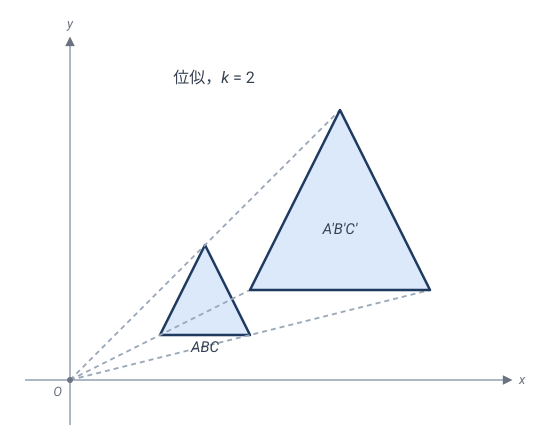
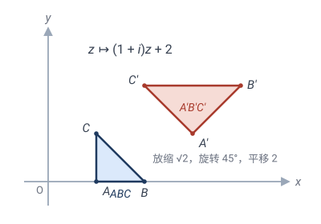
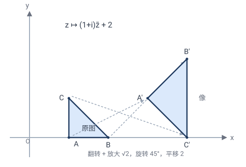
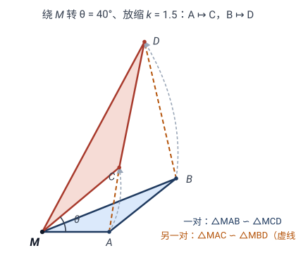

相似变换：允许放缩，保住形状
上一章的等距变换坚持"保距"——硬纸板不能变形。现在我们放松第一道约束：允许整体放大缩小，但不允许"只拉一个方向"。这就是相似变换。
一句话：相似 = 等距 + 放缩。它丢了"大小"，保住"形状"。
💡 本章与第 2 章完全平行——同一套架构，只把"距离"换成"距离之比"：
- 几何主线：第 2 章靠反射生成定理（任何等距 $\le 3$ 个反射，2.3），本章靠相似生成定理——任何相似 = 一个位似 + 至多三个反射（3.3）；
- 代数主线：第 2 章从"保距"推出 $z\mapsto e^{i\theta}z+c$（2.7），本章从"距离同乘 $k$"推出 $z\mapsto az+b$（3.5）——而且只需一步归约：除以 $k$ 就掉回等距；
- 绝妙示例：第 2 章有拿破仑定理，本章有螺旋相似中心与"手拉手"定理（3.8），以及习题里两步证出的托勒密不等式。
3.1什么是相似变换
把硬纸板换成一张能均匀拉伸的橡胶膜——你可以整体放大缩小，但每个方向按同一比例。
🎯 定义：变换 $\mathbf{T}$ 是相似变换（similarity），如果存在常数 $k>0$（相似比），使得
$k=1$ 时就是等距；$k\ne 1$ 时是真正的"放缩"。
💡 "所有距离同乘 $k$"这个条件极强——它不只要求"变大"，而是每个方向均匀变大。如果横拉 2 倍、纵不动（不同方向不同比例），那就不是相似，而是下一章的仿射了。
和等距一样，相似也分手性（定向）：正相似保持手性（不翻面），反相似翻转手性（含奇数次反射）。这条线索会和第 2 章完全平行地贯穿全章（复数形式 3.5、分类 3.7）。
相似比、面积比、体积比
距离乘 $k$，立刻推出：
- 长度 $\times k$；
- 面积 $\times k^2$（二维：长、宽各乘 $k$）；
- 体积 $\times k^3$（三维）。
✏️ 手算：把一张 1:1 图纸按相似比 $k=5$ 放大。边长变 5 倍，面积变 $25$ 倍。原图是个边长 $2$ 的正方形（面积 $4$），放大后边长 $10$、面积 $100=25\times 4$ ✓。
3.2位似：最纯粹的相似
第 2 章有三种基本等距（平移、旋转、反射）当"砖"。本章放松了一个自由度——大小——所以需要添一块新砖：位似。
固定一点 $O$（位似中心），把每个点沿射线 $OP$ 放缩 $k$ 倍：$\mathbf{H}_{O,k}(P)$ 在射线 $OP$ 上，且 $\dfrac{O\mathbf{H}(P)}{OP}=k$。这叫位似变换（homothety）。它是相似里"不旋转、不平移，只放缩"的纯净版本。取 $O$ 为原点，复数形式就一行：

位似的几条看家性质（都从上式一眼读出）：
- 把直线映成平行直线（方向不变，只放大）；
- 把圆映成圆（圆心同样放缩，半径乘 $k$）；
- **中心 $O$ 是不动点**——位似是"有心的放缩"；
- 保角且保持手性（不旋转、不翻面）。
✏️ 手算：以原点为中心、$k=2$ 的位似：$(1,2)\mapsto(2,4)$；单位圆 $x^2+y^2=1$ 映成 $x^2+y^2=4$（圆心不变、半径乘 2）✓。
💡 **约定 $k>0$。** "负位似"（$k<0$，放大同时掉头）= 正位似 + 绕 $O$ 转 $180°$——旋转那部分归给等距，所以本章只说 $k>0$ 的位似。
位似成群吗？——和反射一样的微妙答案
- **绕同一点 $O$ 的位似**全体：成群 ✓——比相乘 $k_1k_2$、逆是 $1/k$，与正实数乘法群 $\mathbb{R}^{+}$ 同构。
- 不同中心的两个位似复合：用复数一行看穿。取 $O_1$ 为原点，$O_2=o_2$：
$k_1k_2\ne1$：有不动点（$\frac{(1-k_2)o_2}{1-k_1k_2}$，在直线 $O_1O_2$ 上），仍是位似；$k_1k_2=1$：退化成平移，掉出位似这一类！
💡 这一幕在第 2 章见过：**反射不成群，却生成整个 $E(2)$**。位似也一样——单独不成群，但它和反射合在一起，恰好生成所有相似变换。这就是下一节的生成定理。
3.3相似生成定理：位似 + 等距生成一切
现在来本章的几何主线，与 2.3 完全平行。
定理（相似生成定理）：平面上的任何相似变换，都可以写成至多一个位似与至多三个反射的复合：
其中 $\mathbf{H}$ 是比 $k$ 的位似，$\mathbf{U}$ 是等距（由 2.3，$\le 3$ 个反射）。
换句话说——反射管"位置、方向、手性"，位似管"大小"，这两类原子就够造出一切相似。 证明手法也和 2.3 相同：先证"三点钉死"，再构造对齐。
引理（相似被不共线三点唯一决定）：若两个相似 $\mathbf{T},\mathbf{U}$ 在不共线三点 $A,B,C$ 上取值相同，则 $\mathbf{T}=\mathbf{U}$。
证：相似比先被两点钉死——$k=\dfrac{d(\mathbf{T}(A),\mathbf{T}(B))}{d(A,B)}$，两个相似给出同一个 $k$。于是 $\frac{1}{k}\mathbf{T}$ 与 $\frac{1}{k}\mathbf{U}$ 都是等距（距离同除以 $k$ 后保距），且在 $A,B,C$ 上取值相同；由 2.3 的引理（等距被不共线三点决定），$\frac{1}{k}\mathbf{T}=\frac{1}{k}\mathbf{U}$，即 $\mathbf{T}=\mathbf{U}$。$\square$
主定理的构造证明：给定相似 $\mathbf{T}$（比 $k$）和不共线三点 $A,B,C$，记 $A'=\mathbf{T}(A)$ 等。分两步对齐：
- 第 1 步（对齐大小）：任取一点 $O$，作位似 $\mathbf{H}=\mathbf{H}_{O,k}$。它把 $\triangle ABC$ 映成 $\triangle A_1B_1C_1$，三边都是原来的 $k$ 倍；而 $\triangle A'B'C'$ 的三边也是 $\triangle ABC$ 的 $k$ 倍（$\mathbf{T}$ 是比 $k$ 的相似）。所以两三角形三边对应相等——由 SSS（2.8），$\triangle A_1B_1C_1\cong\triangle A'B'C'$。
- 第 2 步（对齐位置与方向）：全等 ⟹ 存在等距 $\mathbf{U}$ 把 $\triangle A_1B_1C_1$ 映成 $\triangle A'B'C'$；由 2.3 的反射生成定理，$\mathbf{U}$ 是至多三个反射的复合。
于是 $\mathbf{U}\circ\mathbf{H}$ 把 $A,B,C$ 分别送到 $A',B',C'$，与 $\mathbf{T}$ 在三点上取值相同。由引理，$\mathbf{T}=\mathbf{U}\circ\mathbf{H}$——至多 1 个位似 + 至多 3 个反射。$\square$
💡 这个证明的读法：先任意位似把大小对齐，剩下的必然是等距——因为大小对齐之后，距离已经不变了。所以"研究相似"自动分解成"研究位似（一行 $z\mapsto kz$）+ 研究等距（第 2 章已完工）"。
💡 与 2.3 的对照：
- 等距的原子是反射；相似的原子是反射 + 位似——只多一块砖，多管一件事（大小）。
- 它同样是构造性的：镜面取中垂线（2.3），位似中心可任选。
- 3D 直接推广：任何空间相似 = 至多 1 个位似 + 至多 4 个反射。
3.4相似变换的不变量
| 不变量 | 在相似变换下 |
|---|---|
| 长度比 $\dfrac{AB}{CD}$ | ✓ 保持（定义 · 源不变量） |
| 角度 | ✓ 保持（余弦定理） |
| 直线（共线、顺序） | ✓ 保持（距离可加性） |
| 面积比 | ✓ 保持（都被同乘 $k^2$） |
| 平行、垂直 | ✓ 保持（保直线 + 保角） |
| 绝对长度 | ✗ 丢失（被 $k$ 缩放） |
| 绝对面积 | ✗ 丢失（被 $k^2$ 缩放） |
和 2.4 一样，派生不变量从源不变量逐一证出：
命题（相似保直线）：相似把直线映成直线，且保持线上点的顺序。
证：共线 ⟺ 距离可加：$Q$ 落在 $P,R$ 之间 ⟺ $d(P,R)=d(P,Q)+d(Q,R)$。等式两边同乘 $k$ 仍是等式，故像点保持共线与顺序。$\square$
命题（相似保角）：相似变换保持角的大小。
证：$\triangle ABC$ 的三边被同乘 $k$，余弦定理
的分子分母同乘 $k^2$，比值不变，故 $\cos\angle A=\cos\angle A'$，$\angle A=\angle A'$。$\square$
关键洞察：相似变换丢失了"大小"，但保留了"形状"。
💡 "形状"的数学精确含义：两个图形同形 ⟺ 存在一个相似变换把它们互变。日常说"这两个三角形形状一样"，就是存在相似变换连接它们。
🤔 想一想（精髓）：注意源不变量悄悄换了——等距的源不变量是"距离"本身；相似的源不变量是"距离之比"（任意两段长度的比例）。角、共线、平行、形状全由"距离比"派生（余弦定理里 $k$ 约掉了，可加性里 $k$ 提走了）。
这是爱尔兰根纲领的第二课：**变换群放大一级（$E(2)\subset\mathrm{Sim}(2)$），不变量就丢掉一层**（绝对长度、绝对面积没了，比值还在）。第 4 章仿射、第 5 章射影会把这个规律一路推到底。
3.5相似的复数形式
现在走代数主线。目标：从定义 $d(\mathbf{T}(P),\mathbf{T}(Q))=k\,d(P,Q)$ 推出相似的通用复数形式。2.7 为等距干了这件事，花了真功夫（保距 + 固定原点 ⟹ 实线性；追踪 $1$ 和 $i$ 的像）。本章不必重推——有一步绝妙的归约：
**除以 $k$，掉回等距。** 设 $\mathbf{T}$ 是比 $k$ 的相似，令
则对任意 $z,w$：
即 $\mathbf{U}$ 保距，是等距！由 2.7，$\mathbf{U}(z)=e^{i\theta}z+c$（正向）或 $\mathbf{U}(z)=e^{i\theta}\bar z+c$（反向）。乘回 $k$，并记 $a=ke^{i\theta}$（故 $|a|=k$）、$b=kc$：
- $|a|$ 是相似比（放缩倍数）；
- $\arg a$（$a$ 的幅角）是旋转角；
- $b$ 是平移。
"乘一个复数 + 加一个复数" = 旋转 + 放缩 + 平移，一气呵成。这正是"相似 = 等距（旋转 + 平移）+ 放缩（$|a|$）"的复数表达。

💡 精髓：2.7 的全部硬功夫原样继承——**常数 $k$ 从复数乘法里穿过去**，什么论证都不用改。这正兑现了 2.7 末尾的预告："把 $|a|=1$ 全换成一般 $|a|=k$"。两章的复数形式是同一推导的两个读数。手性也一样：正相似 $az+b$ 保手性、反相似 $a\bar z+b$ 翻手性——乘正实数 $k$ 不改变行列式的符号。
✏️ 手算：$z\mapsto 2iz$。$|2i|=2$（放大 2 倍），$\arg(2i)=90°$（转 $90°$）。它把 $(1,0)$（即 $z=1$）送到 $2i=(0,2)$：放大 2 倍、转 $90°$。✓

不动点（预告分类定理）：解 $\mathbf{T}(z)=z$。
- 正向 $az+b=z$ 给出 $(1-a)z=b$：
- $a\ne1$（即 $k\ne1$ 或 $\theta\ne0$）：唯一不动点 $z_0=\dfrac{b}{1-a}$；
- $a=1$（$k=1$ 且 $\theta=0$）：无不动点（$b\ne0$），是平移——等距情形，见 2.7。
- 反向 $a\bar z+b=z$：取共轭得 $\bar z=\bar a z+\bar b$，代回原式：
- $|a|\ne1$（$k\ne1$）：系数非零，唯一不动点 $z_0=\dfrac{a\bar b+b}{1-|a|^2}$；
- $|a|=1$（$k=1$）：方程退化成 $0\cdot z=a\bar b+b$，要靠相容条件 $a\bar b+b=0$ 救场——这正是 2.7 反向等距的讨论（不满足：无不动点，滑动反射；满足：一整条不动直线，反射）。
💡 注意这个对比：$k=1$ 时反向方程退化（$z$ 的系数是 $0$），不动点要么没有、要么一整条；$k\ne1$ 时系数 $1-|a|^2\ne0$，自动有唯一不动点。放缩像一只"引力中心"，把不动点吸了出来——这是 3.7 分类定理的关键。
3.6相似群
全体相似变换构成一个群（用复合运算），叫相似群 $\mathrm{Sim}(2)$。用 3.5 的复数形式 $\mathbf{T}_{a,b}:z\mapsto az+b$（正向相似，$a\ne 0$）来写，群的运算——复合与逆——有完全显式的公式：
- 复合（群的"乘法"，先做 $\mathbf{T}_{a_2,b_2}$、再做 $\mathbf{T}_{a_1,b_1}$）：
即复合的参数为 $a=a_1 a_2$、$b=a_1 b_2+b_1$。读出几何意义：相似比相乘（$|a|=|a_1||a_2|=k_1 k_2$）、转角相加（$\arg a=\arg a_1+\arg a_2$）。所以"先放缩 $2$ 倍转 $30°$、再放缩 $3$ 倍转 $20°$" $=$ "一次放缩 $6$ 倍转 $50°$"——多次操作可合并成一次，这正是封闭性的内容（$a_1 a_2\ne 0$，结果仍是相似）。
- 逆：解 $w=az+b$ 得 $z$，
相似比从 $|a|$ 变成 $1/|a|$（放缩 $k$ 的逆是放缩 $1/k$）✓。
- 单位：$\mathbf{T}_{1,0}:z\mapsto z$（比 $1$、不转、不平移）。
四条公理由此逐条成立（封闭：$a_1a_2\ne0$ ✓；结合律：复数乘法/加法天然结合；单位、逆：如上）。
子群与层级
- 等距群 $E(2)\subset\mathrm{Sim}(2)$：$k=1$（即 $|a|=1$）的那些。两个 $k=1$ 复合还是 $k=1$（比相乘），逆也是 $k=1$（$1/1=1$），故封闭，是子群。
- 正相似群 $\mathrm{Sim}^{+}(2)$：只含 $z\mapsto az+b$（不翻面）。反相似 = 任一固定反射 × 正相似，单独不成群（两个反相似复合是正的）。
- **绕同一点 $O$ 的位似群** $\cong\mathbb{R}^{+}$：比相乘（3.2），是 $\mathrm{Sim}^{+}(2)$ 的子群。
层级（对照 2.5 的 $\mathrm{SO}(2)\subset E^{+}(2)\subset E(2)$）：
💡 "是群"为什么重要：它意味着"先放缩 2 倍、再放缩 3 倍"等价于"一次放缩 6 倍"——多次放缩可以合并。这种"可合并"正是群结构的威力。第 7 章爱尔兰根纲领会把它变成：**相似几何 = 研究 $\mathrm{Sim}(2)$ 的不变量**（角、长度比——见 3.4）。
3.7相似的分类定理
等距按"最少反射数"分成五类（2.6）。相似的分类更简洁——只看相似比 $k$ 和正反向，因为 3.5 的不动点分析已经把活儿干完了。
**$k=1$**：就是等距，退化为 2.6 的五类（恒等 / 反射 / 旋转 / 平移 / 滑动反射）。
**$k\ne 1$（真正放缩）：只剩两类，都有唯一不动点**——
| 复数形式 | 类型 | 不动点 | |||||
|---|---|---|---|---|---|---|---|
| 正向 | $z\mapsto az+b$，$\ | a\ | \ne1$ | 螺旋相似（旋转位似） | 唯一：$z_0=\dfrac{b}{1-a}$ | ||
| 反向 | $z\mapsto a\bar z+b$，$\ | a\ | \ne1$ | 反射位似 | 唯一：$z_0=\dfrac{a\bar b+b}{1-\ | a\ | ^2}$ |
- 螺旋相似：绕不动点 $z_0$ 改写（$w=z-z_0$）：
即"绕 $z_0$ 转 $\arg a$、以 $z_0$ 为心放缩 $|a|$"。只放缩不转（$\arg a=0$）就是纯位似；只转不放缩（$|a|=1$）则退化成纯旋转。
- 反射位似：同样绕 $z_0$ 改写：
而 $e^{i\theta}\bar w$ 是关于**方向角 $\theta/2$ 的直线**的反射（2.7 已验），所以这是"关于过 $z_0$、方向 $\theta/2$ 的轴反射 + 以 $z_0$ 为心放缩 $k$"。
💡 **为什么 $k\ne 1$ 只有这两类？** 看 3.5 的不动点方程：正向是 $(1-a)z=b$、反向是 $(1-|a|^2)z=a\bar b+b$——$k\ne1$ 时系数必然非零，方程必然有唯一解。等距里"平移、滑动反射"这类无不动点的运动，在真正放缩时根本不存在：平移再放缩 $z\mapsto kz+b$（$k\ne1$）总解得出不动点 $z_0=b/(1-k)$，它不再是平移，而是绕 $z_0$ 的位似。放缩把无不动点的运动全吸成了有心的。
💡 精髓：等距的分类靠"数反射个数"（2.6），相似的分类靠"解不动点方程"——$k=1$ / $k\ne1$ 正对应方程退化 / 不退化。复数形式再一次自己吐出了几何分类。
3.8绝妙示例：螺旋相似中心与"手拉手"
第 2 章的拿破仑定理展示了"旋转 = 乘 $\omega$"的代数威力。本章的招牌是螺旋相似中心——它把"两条线段的对应"浓缩成一点处的一对相似三角形，是竞赛几何里出现频率最高的变换工具。
问题：给定两条线段 $AB$ 与 $CD$（不等长或不平行），是否存在正向相似把 $A\mapsto C$、$B\mapsto D$？唯一吗？它的旋转放缩中心在哪？
代数答案（一行）：设 $z\mapsto \alpha z+\beta$。两个条件 $\alpha a+\beta=c$、$\alpha b+\beta=d$ 相减：
存在且唯一（详见 习题 2）。$|\alpha|\ne1$ 时，由 3.7 它是螺旋相似，中心 $M$ 是它的不动点。
几何答案（尺规可作）：中心 $M$ 在哪？
- 因为 $M\mapsto M$、$A\mapsto C$、$B\mapsto D$，所以 $\triangle MAB$ 整个被映成 $\triangle MCD$：
- 设直线 $AB$ 与 $CD$ 交于 $X$。转角 $\angle AMC=\arg\alpha$ 正是"直线 $AB$ 转到直线 $CD$ 的角" $=\angle AXC$。$M$ 对弦 $AC$ 张的角等于 $X$ 对弦 $AC$ 张的角，故 **$M$ 在过 $X,A,C$ 的圆上（同弦等角）。同理，$M$ 在过 $X,B,D$ 的圆上**。
- 两圆已交于 $X$，**另一个交点就是 $M$**。两圆一画，中心到手。$\square$
手拉手定理（一对相似 ⟹ 另一对相似）：同一个 $M$ 处，还藏着第二对相似——
证：考虑绕 $M$ 把 $A\mapsto B$ 的螺旋相似（转角 $\angle AMB$、比 $MB/MA$）。由 $\triangle MAB\sim\triangle MCD$ 得 $\dfrac{MC}{MA}=\dfrac{MD}{MB}$ 且 $\angle AMC=\angle BMD$——同一个转角、同一个比恰好也把 $C\mapsto D$。于是 $A\mapsto B$、$C\mapsto D$、$M\mapsto M$，$\triangle MAC$ 被映成 $\triangle MBD$。$\square$

✏️ 经典特例（中考招牌"手拉手模型"）：共顶点 $A$ 的两个同向等边三角形 $\triangle ABC$、$\triangle AMN$。绕 $A$ 转 $60°$ 把 $B\mapsto C$、$M\mapsto N$（$k=1$ 的螺旋相似），所以线段 $BM$ 的像是 $CN$——**$BM=CN$ 且夹角 $60°$，一步证完。它的真身就是螺旋相似；把等边三角形换成两个共顶点的相似**三角形，$k\ne1$，结论变成 $CN=\dfrac{AC}{AB}\,BM$——同一个定理。
💡 平行退化：若 $AB\parallel CD$，交点 $X$ 跑去无穷远，两圆退化成直线 $AC$ 与 $BD$——它们的交点就是 $M$（此时 $\arg\alpha=0$，$M$ 是纯位似中心，即两线段的"内 / 外相似中心"）。特别地，任意两个半径不等的圆之间必有两个位似中心。
💡 为什么它是本章的"拿破仑"：拿破仑定理把"等边"翻译成代数恒等式；螺旋相似中心把"两线段对应"翻译成 $M$ 点处的一对相似三角形——而"手拉手"说这种相似成对出现：看见 $\triangle MAB\sim\triangle MCD$，就免费得到 $\triangle MAC\sim\triangle MBD$。习题 6 会用它两步证出托勒密不等式——那是本章理论最漂亮的一次出手。
3.9相似三角形：AAA 判定的变换本质
中学里"相似三角形"判据（AAA、SAS 相似、SSS 相似）用变换一句话说完：
两个图形相似 ⟺ 存在一个相似变换把一个映成另一个。
几条判据都在问：给多少数据，一个三角形的形状就被定死（大小可任选）？ 而"相似"无非是说——两个三角形能按同一比例 $k$ 缩放着对应起来（所有距离都乘 $k$，3.1）。AAA 最底层，直接证；其余归约到它。（这与 2.8 全等判据的结构一模一样：那里 SSS 是地基，这里 AAA 是地基——因为源不变量从"距离"换成了"距离之比"。）
AAA：三角相等 ⟺ 边上距离同比例 ⟺ 相似
三角对应相等 ⟹ 三边成同一比例：正弦定理给出同一三角形内 $|AB|:|BC|:|AC|=\sin\angle C:\sin\angle A:\sin\angle B$，两三角形角相同 ⟺ 三边之比相同 ⟺ 对应边成同一比例 $k$（$|A'B'|=k|AB|$ 等）。
于是边上任意两点的距离都按 $k$ 缩放。任取两点 $D,E$：
- 同一条边上：$DE$ 是弧长之差，按 $k$ 缩放得 $D'E'=k\cdot DE$。
- 两条相邻边上：取公共顶点为枢（设为 $A$，$D$ 在 $AB$、$E$ 在 $AC$），由余弦定理
而 $A'D'=k\cdot AD$、$A'E'=k\cdot AE$、$\angle A'=\angle A$，故 $D'E'=k\cdot DE$。
边上任意两点的距离都按同一 $k$ 缩放 ⟺ 两三角形相似。$\square$
SAS、SSS 相似：归约到 AAA
- SAS 相似（$\angle A=\angle A'$ 且 $\dfrac{|AB|}{|A'B'|}=\dfrac{|AC|}{|A'C'|}$）：第三边由余弦定理定，且成同一比例；三边成比例 ⟹ 三角相等（余弦定理反推）⟹ 归约到 AAA。
- SSS 相似（三边成同一比例 $k$）：余弦定理 $\cos\angle A=\dfrac{|AB|^2+|AC|^2-|BC|^2}{2|AB|\cdot|AC|}$，三边同比 ⟹ $\cos\angle A=\cos\angle A'$ ⟹ $\angle A=\angle A'$，同理三角 ⟹ 归约到 AAA。
🤔 对比"全等"与"相似"：差别就一个"大小"——
- 全等（第 2 章）= 所有距离不变（$k=1$）⟺ 大小、形状都同 ⟺ 判据用 SSS（边长定）。
- 相似（本章）= 所有距离**同乘 $k$** ⟺ 形状同、大小可异 ⟺ 判据用 AAA（角定形状）。
全等比相似多约束了"大小"。**约束放松（$k=1$ → $k$ 任意），判据就从"边"换成"角"——这是变换层级给的一个干净洞察。AAA 之所以是相似的旗舰判据，正因为它直接动用了相似变换最该保的不变量：角。这也正是 2.8 末尾那个悬念（"AAA 为什么不够判全等"）的答案：AAA 本来就是这一层**的判据。
3.10自相似与分形：相似在造"怪东西"
相似变换有个迷人应用：反复用相似，造出自相似图形（分形）。
Koch 雪花：从一条线段开始，反复"把每段中间 $1/3$ 替换成向外小三角形的两条边"。每一步，图形由**四个相似比 $1/3$ 的小拷贝拼成——它是自相似**的（局部放大 3 倍 ≈ 整体）。
✏️ 手算 Koch 曲线长度：每步把每段长度乘 $4/3$（1 段 → 4 段，每段 $1/3$）。初始长 1，$n$ 步后长 $(4/3)^n$。$n\to\infty$ 时长度 $\to\infty$——但它围的面积有限！无限长的边界围有限的面积，这是分形的奇观。
Sierpiński 三角形：把一个三角形分四份、挖中间那个、对剩下三个重复。每步 = 三个相似比 $1/2$ 的小拷贝。
曼德博集合：那个著名的"心形 + 无数小芽"，每个小芽放大后又是整体的相似拷贝。
💡 分形几何（Mandelbrot, 1975）的核心正是自相似——图形在相似变换下不变。相似不只用于"放大地图"，它是描述自然界（海岸线、云、血管、闪电）粗糙结构的语言。
3.11应用：地图、模型、缩放
相似变换无处不在：
- 地图与模型：1:1000 的地图 = 把现实按 $k=1/1000$ 缩小。形状对（角不变），大小不对。
- 缩放 UI / 字体：放大字体 = 相似变换，字形不变。
- 黄金比例：正五边形里到处是黄金比 $\varphi$——它和相似的"不动点"有关（第 8 章对称群会再遇 $D_5$）。
3.12本章小结
本章与第 2 章是同一架构的两次实现——对照着记：
- 定义：等距 = 保距；相似 = **距离同乘 $k$**（$k=1$ 即等距）。
- 几何主线（生成定理）：等距 $\le 3$ 个反射（2.3）；相似 = 至多 1 个位似 + 至多 3 个反射（3.3）。原子从"反射"扩成"反射 + 位似"。
- 不变量：等距的源不变量是距离；相似的源不变量是距离之比——角、共线、形状全由它派生（3.4）。群放大一级，不变量丢一层。
- 代数主线（复数形式）：等距 $z\mapsto e^{i\theta}z+c$ / $e^{i\theta}\bar z+c$（2.7）；相似 $z\mapsto az+b$ / $a\bar z+b$，$|a|=k$（3.5）——证明只有一步：**除以 $k$ 掉回等距**。
- 群：$E(2)\subset\mathrm{Sim}(2)$（3.6）；复合 = 比相乘、角相加；逆 = 比取倒数。
- 分类：等距五类按"最少反射数"（2.6）；相似按"$k=1$ / $k\ne1$ × 正 / 反"（3.7）——$k\ne1$ 只剩螺旋相似（正向）与反射位似（反向）两类，都有唯一不动点（平移、滑动反射被放缩吸收）。
- 绝妙示例：拿破仑定理（第 2 章）⟷ 螺旋相似中心与手拉手定理（3.8）：$\triangle MAB\sim\triangle MCD\iff\triangle MAC\sim\triangle MBD$，一对相似免费生另一对；习题 6 用它两步证托勒密不等式。
- 判据：全等 SSS 是地基（2.8）⟷ 相似 AAA 是地基（3.9）——判据从"边"换成"角"，因为源不变量从"距离"换成了"距离之比"。
- 自相似造出分形（Koch、Sierpiński、曼德博，3.10）。
下一章我们再放松一步——允许"斜切、单向拉伸"，得到仿射变换：保住平行，但丢掉角和圆。
下一章：第 04 章 · 仿射变换
🧩 本章习题
手算题 3.1 相似比与旋转角
变换 $z\mapsto 3(\cos 30°+i\sin 30°)\,z+5$ 的相似比和旋转角各是多少？
查看解答 / 提示
答：$a=3(\cos 30°+i\sin 30°)$，$|a|=3$（相似比 3），$\arg a=30°$（转 $30°$）。
思考题 3.2 相似 vs 等距
两个相似变换复合，相似比是多少？为什么 $E(2)$ 是 $\mathrm{Sim}(2)$ 的子群？
查看解答 / 提示
答：相似比相乘 $k_1 k_2$。等距 = $k=1$ 的相似，两个 $k=1$ 复合还是 $k=1$，故 $E(2)$ 在 $\mathrm{Sim}(2)$ 中封闭，是子群。
应用题 3.3 地图面积
1:50000 的地图上某省面积 $120\text{ cm}^2$，实际面积多少？
查看解答 / 提示
答：相似比 $k=1/50000$，面积比 $k^2=1/(2.5\times10^9)$。实际 $=120\times 2.5\times10^9\text{ cm}^2=3\times10^{11}\text{ cm}^2=30\text{ km}^2$。
动手题 3.4 位似作图
以 $O$ 为中心、$k=2$ 位似，三角形 $ABC$ 的像在哪？面积变几倍？
查看解答 / 提示
答：每顶点沿 $OA,OB,OC$ 方向延伸到 $2$ 倍距离处。面积变 $2^2=4$ 倍。
进阶题 3.5 分形维数
Sierpiński 三角形每步 = 三个相似比 $1/2$ 的小拷贝。它的（Hausdorff）维数是多少？
查看解答 / 提示
提示：自相似维数 $d=\dfrac{\log N}{\log(1/k)}$，$N$ 是拷贝数，$k$ 是相似比。 答：$N=3,k=1/2$，$d=\dfrac{\log 3}{\log 2}\approx 1.585$——介于 1 维（线）和 2 维（面）之间，这就是"分形维数"。
📚 延伸：相似变换的经典应用题（欧拉线定理、把线段 $AB$ 映到 $CD$、螺旋相似的不动点、Koch 雪花面积、正五边形黄金比、托勒密不等式，共 6 道），见 03-相似变换-习题.md。这些题用位似、复数形式、螺旋相似、手拉手等第 3 章结论一两步解决——正是相似变换的威力。